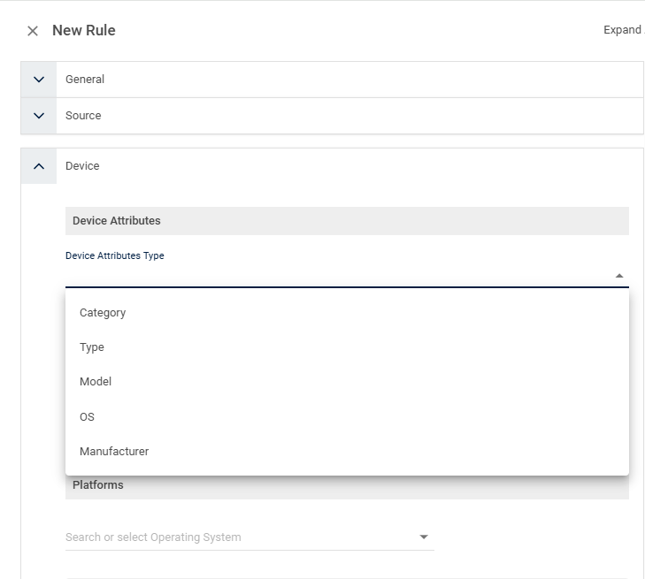
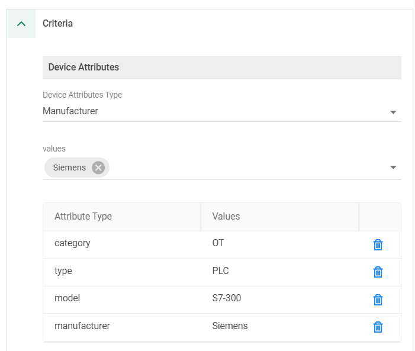

Why this matters
Manufacturing security starts with a question most organisations can't answer: what is actually connected to the plant network? OT and IoT devices arrive with the machinery, get plugged in by integrators, and stay for decades. They can't be patched on demand, can't run agents, and were never designed to defend themselves.
The objective is threefold: visibility of every OT/IoT device type on the network, contextual policies applied to those devices based on what they are, and one consistent security policy for every device and user — configured once, applied everywhere.
Why OT/IoT devices are hard to secure
No agents, no patching
PLCs, HMIs and sensors run embedded firmware. There is nothing to install an EDR agent on, and patch windows are measured in months — production uptime always wins.
Flat OT networks
Plant networks were built for availability, not security. Once a single device — a camera, a smart plug — is compromised, nothing stops lateral movement towards the SCADA layer.
IT/OT convergence
Historians and MES need to exchange data with enterprise ERP. Every new IT-to-OT connection widens the attack surface across the boundary the Purdue model says to defend.
“Can you list every device on your plant floor right now — and if one camera or PLC were compromised today, what stops it moving laterally to your SCADA servers, or calling out to the internet?”
Configured once, applied everywhere, contextually aware
Cato passively discovers and classifies every device behind the Socket — no agents, no scanners, no disruption to production traffic. Each device is identified by category, type, model, OS and manufacturer, and those attributes become policy objects. A rule can target “every PLC”, “every Siemens S7-300”, or “every IP camera on old firmware” — and it applies automatically as matching devices join the network.
Segmentation follows the frameworks OT teams already use. The Socket's LAN firewall enforces micro-segmentation between Purdue levels and IEC 62443 zones on the plant floor itself, while WAN and internet policy is enforced at the Cato PoP — one policy model spanning LAN, WAN and cloud.
Key benefits
Reduced operational complexity
Global policies built on device type and function — configured once in the CMA, applied at every site, no per-plant firewall estate to maintain.
Context- and identity-aware membership
Devices join policies by what they are — category, type, model, OS, manufacturer — not by fragile IP ranges that drift out of date.
Smaller threat landscape via ZTNA principles
Every device gets only the access its function requires; advanced threat protection (IPS, anti-malware) inspects the traffic it is allowed to send.
Reduced risk of lateral movement
LAN firewall micro-segmentation between Purdue levels means a compromised camera or smart plug cannot pivot to the SCADA layer.
Policies built from device attributes
Device-attribute rules are ordinary firewall rules — same rulebase, same actions, same event tracking — with the source defined by what the device is rather than where it sits on the network.



Typical manufacturing policies — a starter rulebase
The device-attribute screenshots above show the shape of a live rulebase; this section turns that shape into a deployable starting point for a plant. It maps the Purdue levels in the diagram to a concrete set of rules an SE can stand up on day one and then tighten — the OT equivalent of the camera, smart-plug and TP-Link rules already running in the rulebase screenshot, extended down to the control layer.
Every rule below is illustrative and is meant to go live on Allow · Event first. Discovery before enforcement is the rule everywhere in Cato; on a production line it is non-negotiable. You never block first on a live plant — watch the events, confirm nothing legitimate is being caught, and only then flip a rule to Block. A false positive here stops a machine, not a web page.
Starter rulebase (illustrative)
| # | Name | Source / device criteria | App / Category / Destination | Action | Track |
|---|---|---|---|---|---|
| 1 | OT/IoT discovery — baseline visibility | Category = OT · IoT (any type) | Any — monitor phase | Allow | Event |
| 2 | HMI → PLC — in-cell control | Type = HMI | PLCs in same cell · control protocols (S7 · Modbus · EtherNet/IP) | Allow | Event |
| 3 | Engineering workstations — vendor updates | Engineering-Workstations group | Vendor update FQDN allowlist (e.g. Siemens · Rockwell) | Allow | Event |
| 4 | Vendor remote access — scoped ZTNA | Vendor IdP group · ZTNA app segment · time-bounded window | Jump server / one cell app only · session recorded | Allow | Event |
| 5 | Cameras · scales · label printers | Type = IP camera · weigh scale · label printer | NVR / MES function servers only — no internet | Allow | Event |
| 6 | PLCs / controllers — no internet egress | Category = OT · Type = PLC / controller | Internet (any) | Block | Event |
| 7 | IT ↔ OT boundary — default-deny | IT / corporate subnets | OT zones (Purdue ≤ L3) — except the explicit rules above | Block | Event |
| 8 | Corporate IT — standard policy, LAN-separated | Corporate LAN users (same site / same Socket) | Internet · SaaS — normal internet policy | Allow | Event |
Rules 2–8 are read top-down, first-match; the discovery baseline (rule 1) is the monitor-phase catch that logs everything while you learn the floor, then narrows as the specific allows and blocks are trusted. Corporate IT and the OT devices can share the same site and Socket — the LAN firewall keeps them apart, so rule 8 leaves office users on their normal internet policy while the plant stays segmented. Vendor remote access (rule 4) is the rulebase face of De-risking 3rd-Party & Supply Chain Access — identity-driven, least-privileged, time-bounded and recorded.
Manufacturing scenarios
Line-down triage. A cell stops and the integrator blames “the new firewall”. Filter Monitor → Events to that cell: the events prove whether a Cato rule dropped anything or the traffic never arrived — turning a finger-pointing call into a five-minute answer that clears the network and the policy.
OEM engineer site visit. A machine builder needs to touch one line for two days. Enable the scoped ZTNA rule (rule 4) for their IdP identity with a time-bounded window to a single cell — recorded, least-privileged, and it expires on its own. No jump-box credentials shared, no standing route to the control layer.
New cell commissioning. A new production cell arrives full of unknown devices. Run a discovery-mode week: everything on Allow · Event, watch the inventory populate and the flows settle, then lift the real traffic pattern straight into allow rules before flipping the boundary to default-deny.
Insurance / audit questionnaire. The cyber-insurer or an IEC 62443 assessor asks “how is OT segmented from IT and the internet?” The rulebase above plus the live event hit-counts are the evidence — a screenshot of the boundary default-deny and the PLC internet-block, with counts, answers the question directly instead of with a promise.
How to run the demo
Ask which frameworks they align to (Purdue, IEC 62443), which OT vendors dominate their floor, and whether they have ever had a full device inventory. Use their answers to pick the device you build a rule for.
-
Start with discovery
Assets → Device Inventory
Show the devices Cato has discovered and classified passively from traffic — no agents, no scanners. Walk the attribute columns: category, type, model, OS, manufacturer. This is the visibility they don't have today.
-
Frame it against the Purdue model
Map what the inventory shows to Purdue levels and IEC 62443 zones using the diagram above: field devices and PLCs at Level 0/1, HMI and SCADA at Level 2, historian and jump server at Level 3, enterprise IT at Level 4/5.
-
Build a device-attribute rule
Security → Internet Firewall
Create a new rule with Device Attributes as the source: Manufacturer = Siemens, Type = PLC (add Model = S7-300 for precision). Set the action to Block internet egress and Track = Event. Any matching PLC — at any site, now or in future — inherits this rule automatically.
-
Show segmentation between levels
Security → WAN Firewall
Walk the segmentation rules: HMI allowed to reach PLCs on control protocols, historian allowed northbound to enterprise apps, everything else cross-level denied by default. The same micro-segmentation logic is enforced on-LAN by the Socket's LAN firewall — a compromised device cannot pivot between Purdue levels inside the site.
-
Restrict the maintenance vendor
Security → WAN Firewall
Show the vendor's access scoped to the jump server only — identity-driven ZTNA for the user, device-attribute segmentation for the equipment they maintain. No route to the SCADA or control layer.
-
Prove it with events and hit counts
Monitor → Events
Filter events to the block rules and show live hits — the rulebase screenshot above shows a TP-Link internet block at 193.7K hits. Every allow and block is logged and attributable to a device, not just an IP.